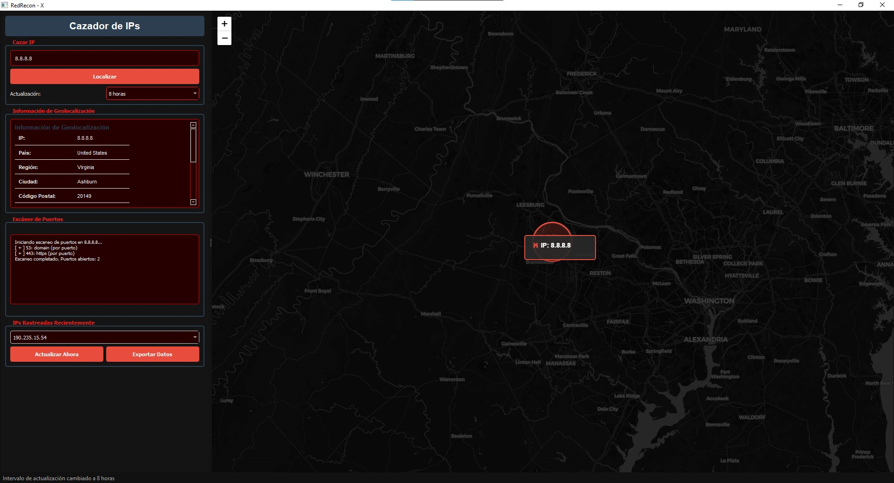

Descripción General
RedRecon - X es una herramienta de la suite RedSpyder, diseñada para rastrear IPs públicas, geolocalizarlas en mapas satelitales interactivos y escanear puertos abiertos. Centraliza toda la información en un historial de rastreo y permite exportación de datos, ideal para auditorías externas y análisis de superficie de ataque.
Características Clave
- Geolocalización de IPs públicas y privadas
- Detección de ISP, organización y AS
- Visualización en mapas satelitales con zoom y marcadores
- Escaneo de puertos expuestos (SSH, HTTP, FTP, etc.)
- Historial de IPs rastreadas con fecha y hora
- Exportación de resultados a archivo JSON
- Interfaz rápida, centralizada y con tema personalizado
Panel de Uso
- Campo de entrada para IPs a rastrear
- Botón “Localizar” para geolocalización y escaneo
- Intervalo de actualización configurable (10 segundos a varios días)
- Mapa interactivo con marcadores y círculos de precisión
- Resultados en tiempo real de puertos abiertos y servicios detectados (BETA)
- Historial de IPs con selección rápida para revisar datos previos
Capturas y Ejemplos

Acciones
Descargar IP Tracker Abrir HerramientaRecomendaciones de Uso
- Mantener conexión estable a Internet
- Evitar escanear IPs ajenas sin permiso legal
- La geolocalización depende de servicios externos y puede variar
- Configurar frecuencia de actualización según necesidad